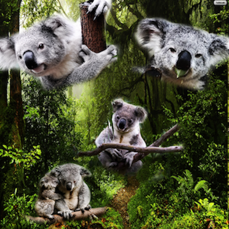

K O A L A S

Despite being called bears, koalas are actually marsupials and sleep about 18
hours a day. They have a lifespan of 13-18 years. Koalas can only live in Australia.
Their primary diet is Eucalyptus leaves. A special digestive system allows them
to break down the leaves and not be harmed by the poison.They eat about 2.5
pounds per day. The koala population has been declining for the past 100 years.
Today there are less than 100,000 koalas left in the world, possibly as few
as 43,000 left in the wild.
Koalas are about 23in. They're so tiny! Babies are carried around in a pouch
fro 6 monts and then transition to being geting around on their moms' back.
Koalas need a lot of space, about 100 trees for each one and thats starting
to become a problem because of shrinkage in Australian forests.
“Koala.” National Geographic, 11 Apr. 2010, www.nationalgeographic.com/animals/ mammals/k/koala/.